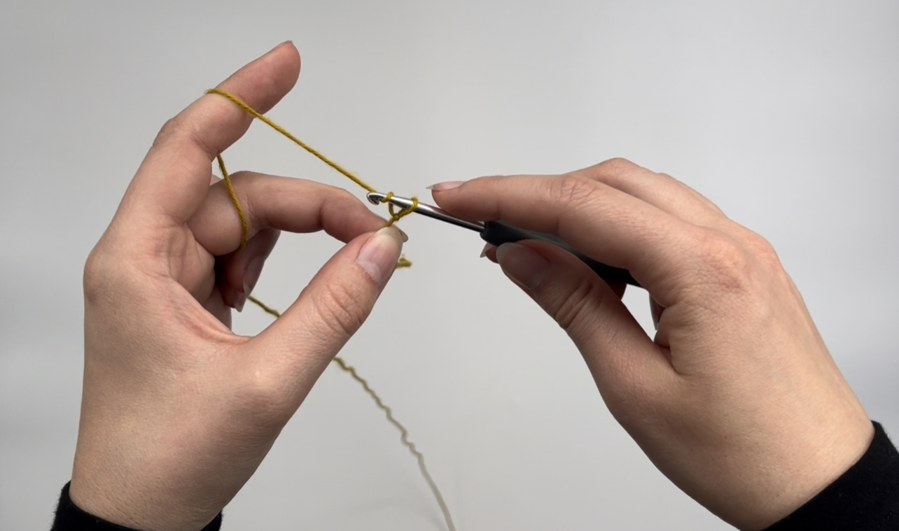

Hækling 101
Hækling er en kreativ håndarbejdsmetode, hvor du bruger en hæklenål og garn til at skabe forskellige mønstre og strukturer.
Det er en afslappende og meditativ hobby, der giver dig mulighed for at skabe smukke og funktionelle genstande som tørklæder, tasker, puder og meget mere.
Som begynder i hækling vil du først lære de grundlæggende teknikker, herunder hvordan man laver kædemasker, fastmasker, halvstangmasker og stangmasker.
Disse er de primære sting, der danner grundlaget for de fleste hæklearbejder.
Så frem med hæklenålen og lad os guide dig i gang!
Grundlæggende hækleteknikker

Brug for en introduktion til basale masker? Så kig med her! Her finder du videotutorials der i detajler viser de forskellige masker.
LÆS OM HÆKLETEKNIKKER HERHækleprojekter for begyndere

Har du også svært ved at finde begyndervenlige opskrifter? Så kig med her og kom i gang!
LÆS OM PROJEKTER HER.png)